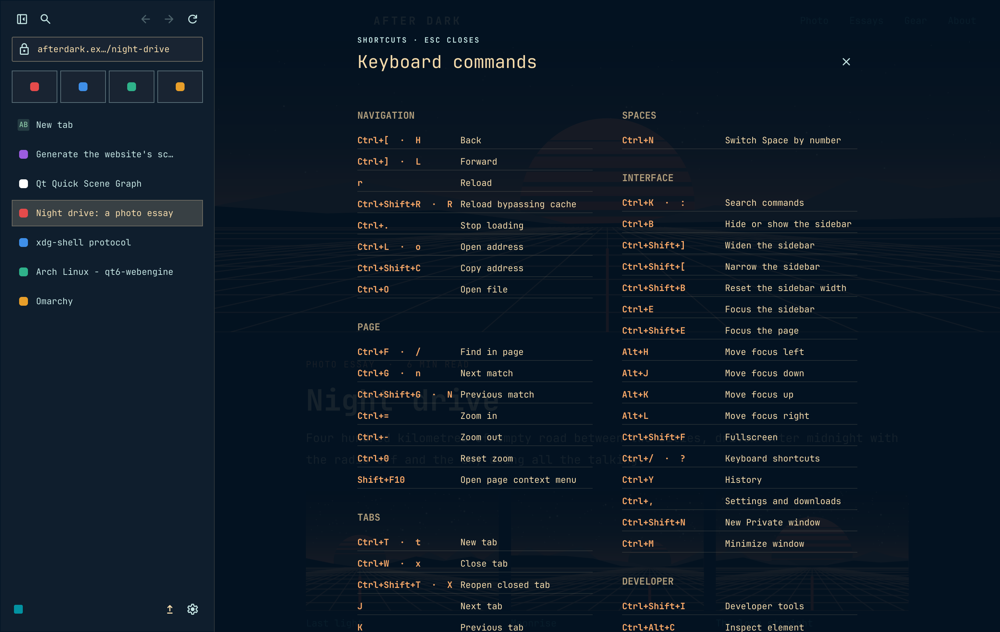
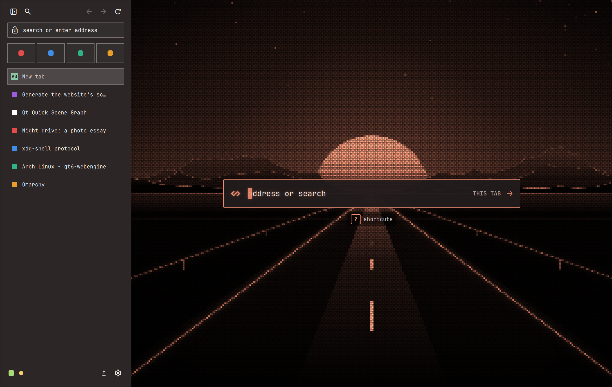
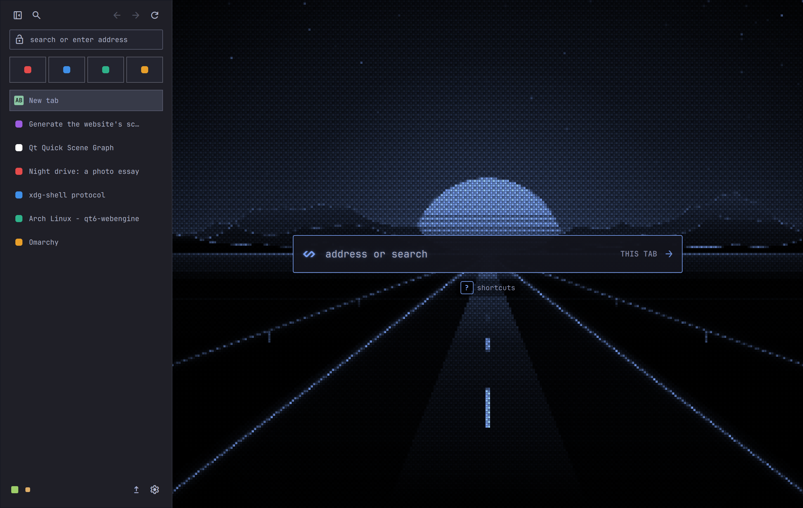
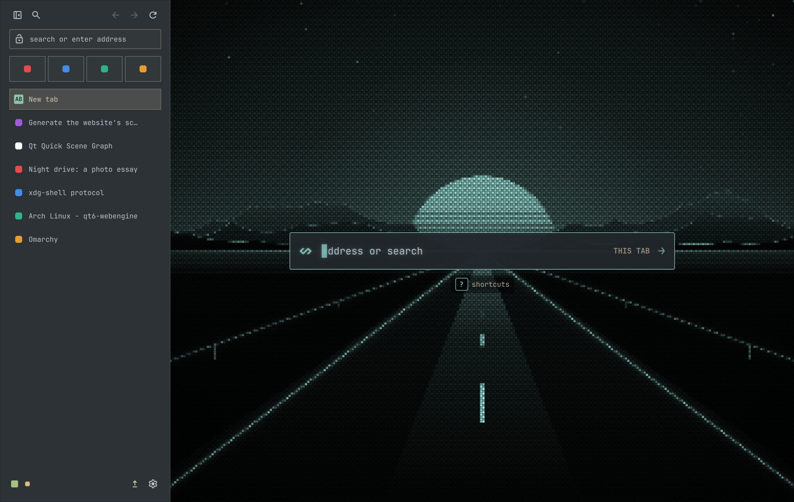
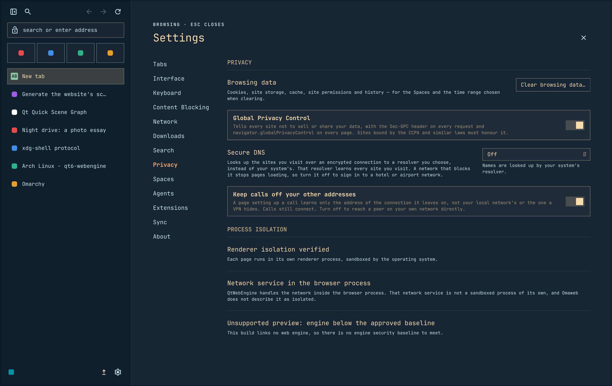
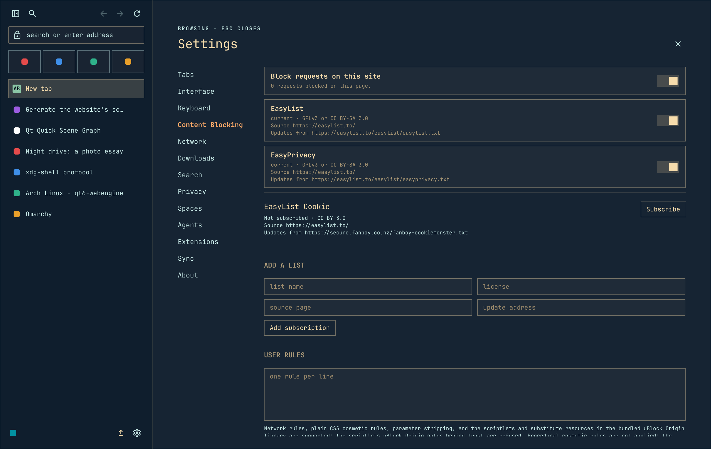
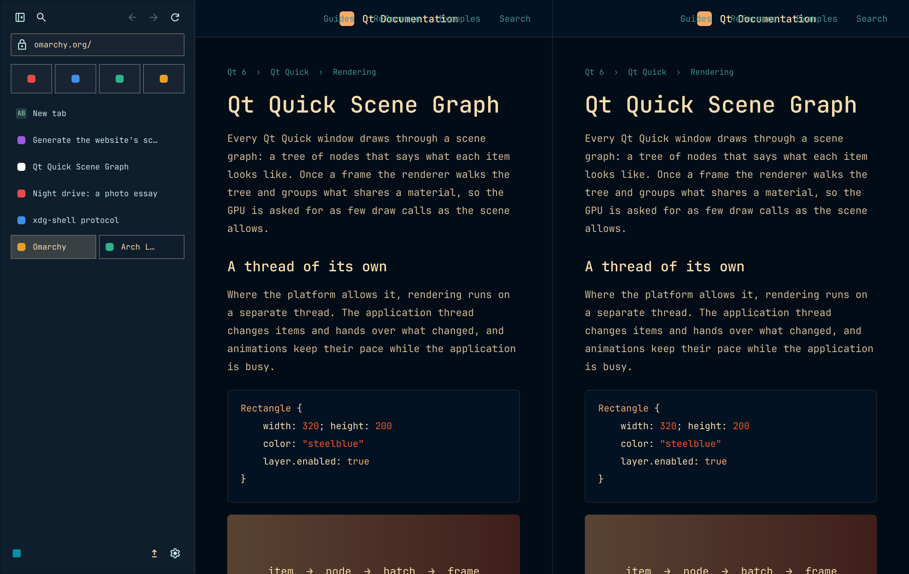
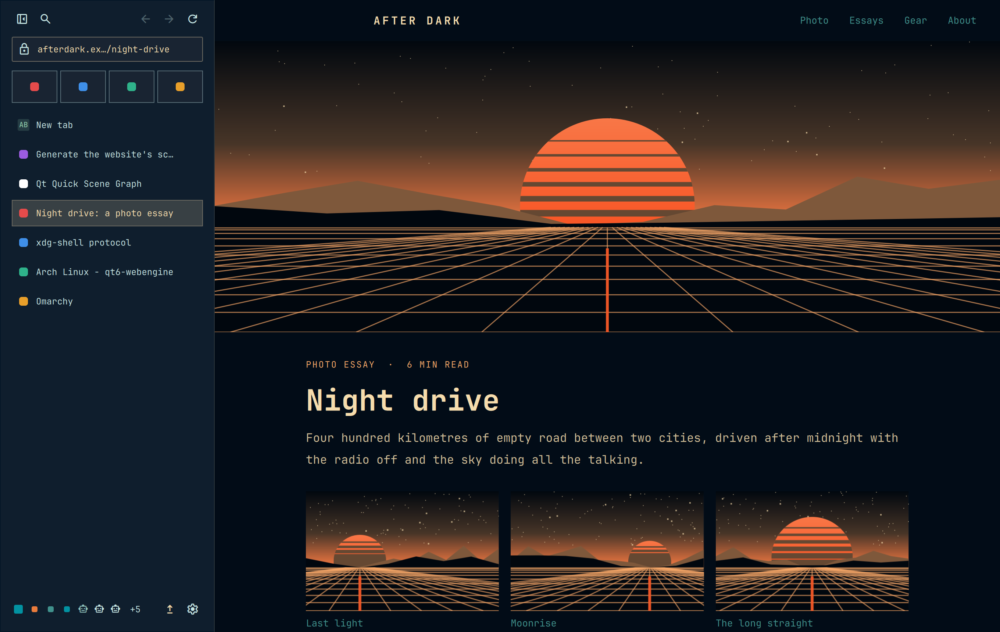

Web navigation system
A browser
for driving
the web.
Keyboard first. Private. Open. For people who know where they’re going.
-
One field for everything
Type a few letters and the Omnibar finds the page: an open tab in this Space or another, a visit from history, a search with your engine’s suggestions. Every browser command runs from the same field. o
-
Work and personal, kept apart
Each Space keeps its own logins, history and tabs in the same window, and wears its own colour from your theme. J and K move through its tabs.
-

Keyboard first
Link hints on f, Vim-style keys, and every binding yours to change in
keybindings.json. The mouse is optional. -



Follows your Omarchy theme
Switch your Omarchy theme and Omaweb switches with it: its colours, its fonts, its opacity, and the road on every new tab. This page follows the theme you pick here. T
-

Private by default
No telemetry, and no account to make. Every request the browser makes on its own is written down.
-

Blocking, built in
EasyList and EasyPrivacy from the first run, with cosmetic rules and a count of what was blocked. Add lists, write your own rules, or turn blocking off for one site.
-

For pros
Two pages side by side in split view, and DevTools docked beside the page.
-

Agents drive their own Spaces
An Agent works in a Space of its own, marked in the footer, and never in yours unless you let it. How Agents work
Get on the road.
Omaweb ships from its own pacman repository, so it installs and upgrades with the rest of your system. Two steps, once.
[omaweb]
SigLevel = Required DatabaseRequired
Server = https://github.com/villekivela/omaweb/releases/download/repo-$archcurl -fsSLO https://raw.githubusercontent.com/villekivela/omaweb/main/security/repo-signing-key.asc
sudo pacman-key --add repo-signing-key.asc
sudo pacman-key --lsign-key FDA535B2185755EA718BEA585DBF15FE484EFA64
sudo pacman -Syu omaweb
The fingerprint is the one thing to check. It comes from here, not from a keyserver, and
pacman installs nothing that key did not sign. From then on,
sudo pacman -Syu
keeps it current. A single package or a build from source instead? The
README has both.